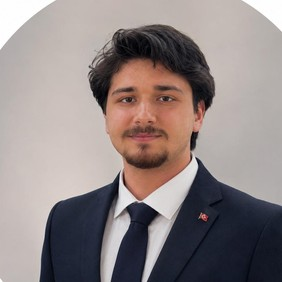

Electrical & Electronics Engineering
Manisa, Türkiye
Ahmet Efe
Özçelik
I am a final year electrical and electronics engineering student at Manisa Celal Bayar University. I work as a quality intern at Schneider Electric, chair our IEEE student branch and lead a TÜBİTAK research project on the energy cities lose to light pollution.
The drawing beside this text is a small power system. As you scroll, it follows my story from the generator to the city.
Drag the drawing to turn it. Click it to push more current through the lines.
01 Generator
Where the energy came from.
A degree, a language and a few people who let me help on real projects early.
Oct 2023 to Jun 2027
Manisa Celal Bayar University
B.Sc. Electrical & Electronics Engineering · GPA 3.18 / 4.00
I finished the English preparatory year at B2 level and started engineering in the following semester as an irregular student, taking courses ahead of the standard plan.
Jan 2024 to Sep 2024
IEEE MCBU Student Branch
Sponsorship Manager, Coordination Team
My first role in the branch. I handled our communication with companies and the sponsorship process, and built the first partnerships we relied on later.
Jul 2024 to Nov 2024
MCBÜ Project Coordination Application and Research Center
Project Officer
I worked on the design and running of university projects and helped other students write their own project proposals. This is where I learned how a project is written before it is built.
Sep 2024 to Aug 2025
IEEE MCBU Power & Energy Society
Chair
I organised trainings, projects and events on renewable energy, energy efficiency and electric vehicles. One of them was a Tea & Talk with a technical engineer from Schneider Electric in December 2024, my first real conversation with someone from the company.
02 Transmission
Carrying it further, to more people.
Most of this stage was about teams, programs and the first time I worked on real equipment.
Feb 2025 to Jul 2025
Shell · İLERİDE
Project Based Trainee
A six month development program on sustainability and 21st century skills, built around training sessions, case studies and presentations.
Aug 2025 to Jul 2026
IEEE MCBU Student Branch
Project Coordinator, Executive Board
I set up new technical project teams, including an electric vehicle team and a rocket team, and decided how people and resources were shared between them.
In March 2026 our branch organised the first YOU Career Summit, supported by the Ministry of Youth and Sports, with speakers from Mitsubishi Electric, Schneider Electric, Siemens, IBM and others.
Jul 2026 to now
IEEE MCBU Student Branch
Chair of the Board
I restructured how the branch is managed and built online tools we now use to plan and track our work. Since then team communication has improved, planning carries less risk, and we have more people at events and more sponsors behind them. I also build partnerships with other universities and student organisations.
Jul 2026 to Aug 2026
Mubea Aviation
Engineer Intern
I supported preventive maintenance planning and tracking, worked alongside the PLC and automation activities, and helped with the maintenance and repair of electrical panels and field equipment.
03 Substation · current chapter
Schneider Electric
Since November 2026 I have been with the Customer Satisfaction & Quality team at the Manisa factory, where medium voltage switchgear is built.
- Role
- Long Term Intern, Customer Satisfaction & Quality
- Products
- MV switchgear, epoxy components, the SM6-36 range
- Learning
- LDS e-Quality for tracking quality on the line, and lean problem solving
After Mubea I had seen what happens when equipment needs repair. Here I am learning the other side: how a product is built so that it does not.
The six cubicles in the drawing are the kind of switchgear I see every day.
04 City
A lot of the light in a city goes up, not down.
That light is energy someone paid for. My TÜBİTAK project asks how much of it is lost and how it could be recovered.
May 2025 to Jul 2026
Sustainable Recovery of Energy Losses Caused by Light Pollution in Urban Areas
Undergraduate Researcher & Project Lead · TÜBİTAK 2209-A
A funded undergraduate research project with a team of four. [Add a sentence about the method or results]
05 Selected work
Four things I built with other people.
TÜBİTAK 2209-A · Project Lead · May 2025 to Jul 2026
Energy lost to light pollution
- The problem
- Cities light the sky as well as the street. The part that goes up is wasted energy.
- What we did
- Wrote the proposal, got it funded and studied how these losses can be measured and recovered.
- Result
- [add results]
- What I learned
- How to turn an idea into something other people are willing to fund.
IEEE MCBU · Chair of the Board · 2026
A new way to run the branch
- The problem
- A growing branch with many teams, and planning that lived in people's heads.
- What we did
- Restructured the management system and built online tools for planning and tracking.
- Result
- Clearer communication, fewer planning surprises, more participants and sponsors at events.
- What I learned
- Quality thinking works for organisations too. Fix the process, not the person.
IEEE MCBU · Project Coordinator · 2025 to 2026
Electric vehicle and rocket teams
- The problem
- Students wanted to build hardware but had no team to do it in.
- What we did
- Started new technical teams and divided people and resources between them.
- Result
- Both teams were set up under the branch. [add milestones]
- What I learned
- Starting a team is easy. Keeping it supplied is the real work.
IEEE MCBU · March 2026
YOU Career Summit
- The problem
- Students rarely hear directly from people working in industry.
- What we did
- Planned and ran a two day summit with support from the Ministry of Youth and Sports.
- Result
- The first edition took place on 26 and 27 March 2026 with speakers from Mitsubishi Electric, Schneider Electric, Siemens and IBM.
- What I learned
- Big events are many small decisions made on time.